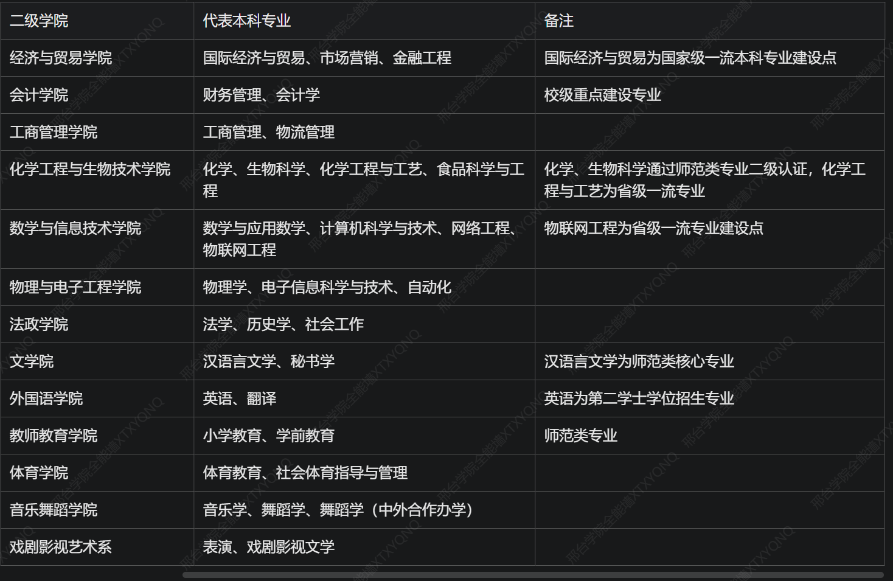

邢台学院为单主校区办学，地址位于河北省邢台市襄都区泉北东大街 88 号，所有本科专业均在主校区培养，无分校区。校园功能分区清晰，教学区、宿舍区、运动区、后勤服务区集中分布，日常通勤便捷。
学校现有 20 余个二级学院（系、部），开设 54 个本科专业，覆盖文学、理学、工学、经济学、管理学、法学、历史学、教育学、艺术学 9 大学科门类，核心院系及代表专业如下：

大一第一学期平均绩点≥2.5（热门专业≥3.0）
无挂科记录，无校纪处分
身体条件符合转入专业体检、素养要求
每位学生在校本科阶段仅限转一次专业
申请时间
大一第一学期末（12 月）、大一第二学期末（6 月）各开放一次转专业申报通道
转专业流程
学生向当前就读学院提交纸质转专业申请表
原就读学院初审签字、审核同意
目标转入学院组织专业笔试 + 综合面试考核
教务处统一复核审批并全校公示名单
公示无异议后，统一办理学籍、班级、培养方案变更手续
热门转专业方向
计算机科学与技术、会计学、法学、汉语言文学、电气工程及其自动化、小学教育
注意：艺术、体育类专业有专业加试；师范类、医学相关专业有分数与身体限制，部分跨大类转专业考核难度更高
核心专业课、有配套习题 / 代码的课程建议购买正版实体书；通识类、理论类课程可酌情使用二手书或电子版。
教材版本以每学期教务处公布的《课程教材选用表》为准，避免因版本差异影响学习。
面向学有余力的全日制本科在校生，跨学科门类修读另一专业，达到要求可获得辅修专业证书，符合学位授予条件的，颁发双学士学位证书。
全日制二年级本科生，无纪律处分、无挂科补考记录；
主修专业必修课程平均成绩 75 分以上；
必须跨学科门类报考（如工学专业修读管理学学位）。
常年开设国际经济与贸易、工商管理、会计学等双学位专业，招生名额约各专业 100 人 / 年，具体以当年教务处通知为准。
利用晚上、周末、寒暑假集中授课，学制与主修专业同步，大四前完成全部课程与考核。
毕业要求：2024 级、2025 级需修满9.5 学分，其中必须包含2 学分公共艺术课程（美育要求）。
选课分三个阶段，通过教务管理系统操作：
每学期修读课程总学分原则上不超过 40 学分，避免课业过载。
通识网课主要在超星尔雅（学习通）、智慧树（知到）平台学习，需按时完成视频、作业与期末考试。
不可重复修读已获得学分的课程，重复修读不计入学分。
学校采用5 分制绩点体系，百分制成绩直接折算绩点，具体对应关系：
100 分 = 5.0 绩点
90-99 分 = 4.0-4.9 绩点（每 1 分对应 0.1 绩点）
80-89 分 = 3.0-3.9 绩点
70-79 分 = 2.0-2.9 绩点
60-69 分 = 1.0-1.9 绩点
60 分以下 = 0 绩点
五级制成绩对应绩点：优秀 = 4.5，良好 = 3.5，中等 = 2.5，及格 = 1.5，不及格 = 0。
平均学分绩点为加权计算，学分越高的课程对绩点影响越大，公式为：
平均学分绩点=∑所有课程学分∑(单门课程绩点×该课程学分)
补考及格：成绩按 60 分记载，对应绩点 1.0，标注 “补考”。
重修及格：按实际考试得分计算绩点，成绩单标注 “重修”。
缓考：与正常考试同等效力，按实际得分计算绩点，无特殊标注。
适用范围：期末考试不及格（低于 60 分）的课程，且无缺考、违纪情况。
时间安排：新学期开学后第 1-2 周进行，具体时间由教务处统一公布。
成绩规则：补考及格统一按 60 分记载，获得对应学分，但绩点仅计 1.0；补考不及格必须参加重修。
报名方式：无需单独报名，系统自动为不及格学生生成补考名单。
适用条件：因病住院、直系亲属重大变故等特殊原因无法参加期末考试，需提前提交书面申请与县级以上医院证明，经院系、教务处审批通过。
时间安排：与开学初补考同步进行。
成绩规则：按实际考试得分记录，正常计算绩点，与正常考试完全等效。
注意：未申请缓考或申请未通过而缺考，按 “旷考” 处理，成绩记 0 分，无补考资格，只能重修。
适用范围：补考不及格、旷考、考试违纪取消成绩的课程。
报名方式：每学期选课期间，在教务系统选择对应课程的重修班，跟随下一年级学生上课、考试。
费用与学分：需按学分缴纳重修费，具体标准以学校当年通知为准；考试及格后获得对应学分，成绩按实际得分记载，标注 “重修”。
重要提示：学校已取消毕业前 “清考” 制度，所有未通过课程必须通过重修合格，否则无法毕业。
执行《国家学生体质健康标准》，本科全员每年测试一次，共 8 个项目：
必测项：身高 / 体重（BMI）、肺活量
男生：50 米跑、坐位体前屈、立定跳远、引体向上、1000 米跑
女生：50 米跑、坐位体前屈、立定跳远、1 分钟仰卧起坐、800 米跑
测试时间：每年 10-12 月集中开展，由体育学院统一组织，按院系分批次进行。
补测安排：首次测试不及格的学生，次学期安排一次补测机会。
单项指标按权重计算总分，满分为 100 分，90 分以上为优秀，80-89 为良好，60-79 为及格，60 以下为不及格。
毕业成绩核算：毕业当年体测成绩占 50%，前三年体测平均分占 50%。
毕业要求：毕业体测综合成绩达到 50 分以上方可毕业；因病、残疾的学生可提交医院证明，申请免予执行体测标准，经审批后不影响毕业
体测成绩与评优评先、奖学金评定直接挂钩，不及格者取消当年评奖资格。
测试项目：身高、体重、视力、肺活量、立定跳远、坐位体前屈、50 米跑、一分钟仰卧起坐（女）/引体向上（男）、800 米跑（女）/1000 米跑（男）。
学年测试总分由标准分与附加分之和构成，满分为120 分。标准分由各单项指标得分与权重乘积之和组成，满分为100 分。附加分根据实测成绩确定，大学生的加分指标为男生引体向上和 1000 米跑，女生 1 分钟仰卧起坐和 800 米跑，各指标加分幅度均为 10 分。（具体评分标准见附表）
90.0 分及以上为优秀，80.0～89.9 分为良好，60.0～79.9 分为及格，59.9 分及以下为不及格。学生测试成
绩评定达到良好及以上者，方可参加评优与评奖；成绩达到优秀者，方可获体育奖学分。测试成绩评定不及格者，在本学年度准予补测一次，补测仍不及格，则学年成绩评定为不及格
学生因病或残疾可向学校提交暂缓或免予执行《标准》的申请，经医疗单位证明，体育军训部核准，可暂缓或免予执行《标准》，并填写《免予执行<国家学生体质健康标准>申请表》，存入学生档案。确实丧失运动能力、被免予执行《标准》的残疾学生，仍可参加评优与评奖，毕业时《标准》成绩需注明免测。
考试时间：每年 6 月、12 月各一次；
报名条件：大二及以上本科生可报考，四级通过后方可报考六级；
考点：本校设考点，统一在教学楼笔试。
考试时间：每年 3 月、9 月各一次；
报考级别：二级（MS Office、Python、C 语言等）最热门，是就业常见加分项；
考点：本校机房为官方考点。
考试时间：每年组织 2-3 次，由校语委办统一报名；
等级要求：师范生需达到二级乙等以上，语文教师需二级甲等以上，是考取教师资格证的必备条件。
考试时间：笔试 3 月、10 月，面试 5 月、次年 1 月；
报名：自行在中小学教师资格考试网报名，邢台市设考点；
报考建议：大三及以上可报考，师范、非师范专业均可报考。
考试时间：每年 12 月下旬笔试，次年 3-4 月复试；
考点：邢台市教育考试院统一安排，本校部分专业可设考点；
学校支持：开设考研自习室、公共课辅导讲座。
中国知网（CNKI）是学校采购的核心学术数据库，校园网内可免费下载文献，校外可通过授权方式访问。
连接校园网（校园 WiFi、宿舍有线网）后，直接打开知网官网（https://www.cnki.net），系统自动识别学校 IP 并登录，可免费检索、下载学校已订购的期刊、硕博论文、会议文献等资源。
安装学校官方 VPN 客户端，用学号密码登录后，网络环境等同于校内，再打开知网即可正常使用，是最稳定的校外访问方式。
进入知网官网→右上角 “登录”→选择 “校外访问”→搜索 “邢台学院”→跳转至学校统一身份认证页面，登录后即可使用。
下载 “全球学术快报” APP，绑定邢台学院机构账号，可在校外随时随地查阅、下载文献。
学校同时采购万方、维普、超星等数据库，访问方式与知网一致；
论文查重：学校为毕业生提供有限次知网查重权限，由院系统一分配。